RETURN TO SITE
Modeling, Lighting, and Rendering
Check out some of my still work in 3D. Included in this page are full scale projects as well as just some fun experimental work! Enjoy.
Trouble in Paradise
This piece was created initally for a final project. The goal was to tell a story in just 5 frames. I went for the classic guy watching TV and antsy wife annoyed that she isn't the center of attention.
Process
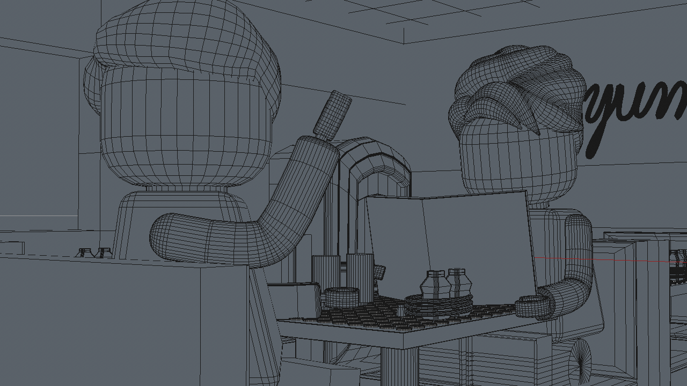
5 Frame Story
Hunger
This piece was also created initally for a final project. Through the execution of this piece I wanted to refine my skills in digital painting and advanced organic modeling. Of course my inspiration was my own dog and home.
Process
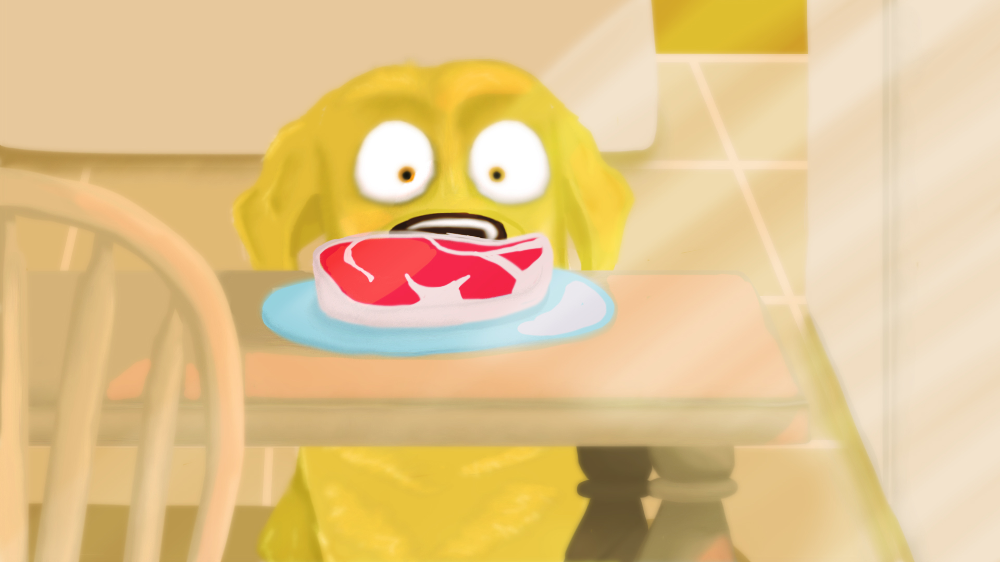 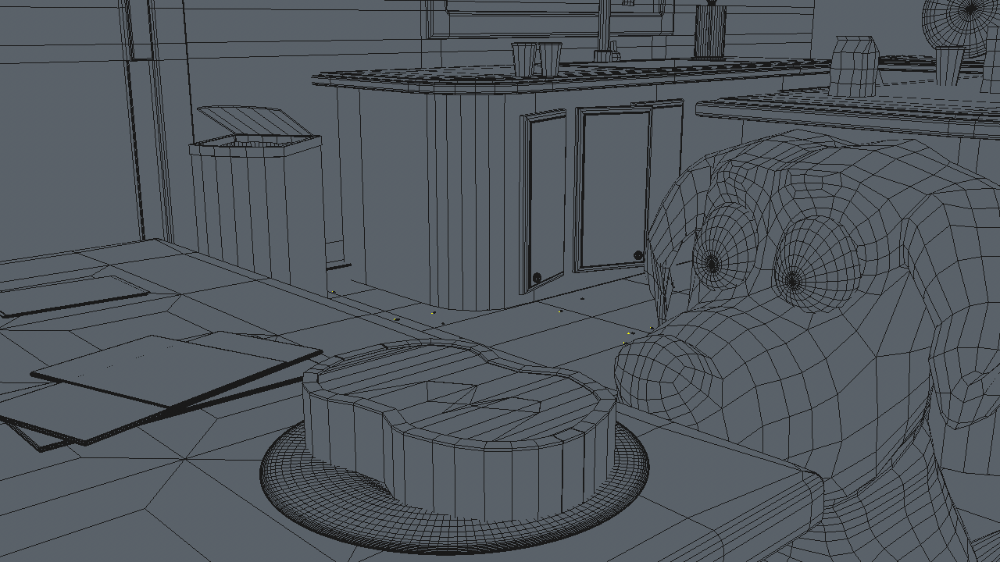 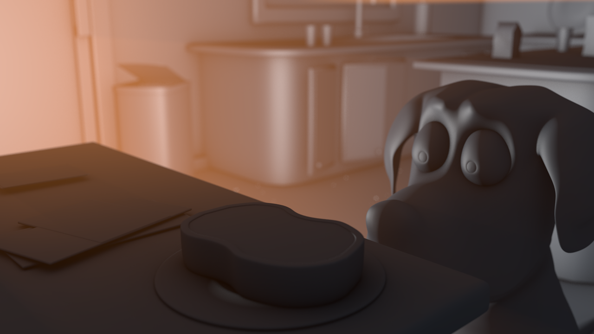
Final
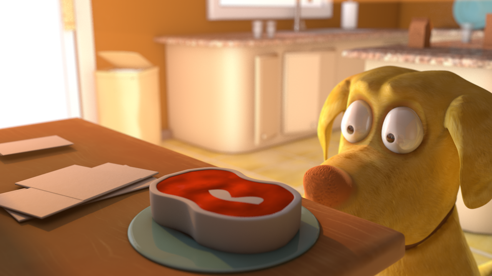Bunhead
This piece was completed in just about an hour. Just a fun little piece playing with sweeps in Cinema 4D and lighting.
Miscellaneous
Some other work with less background information, just plain fun!
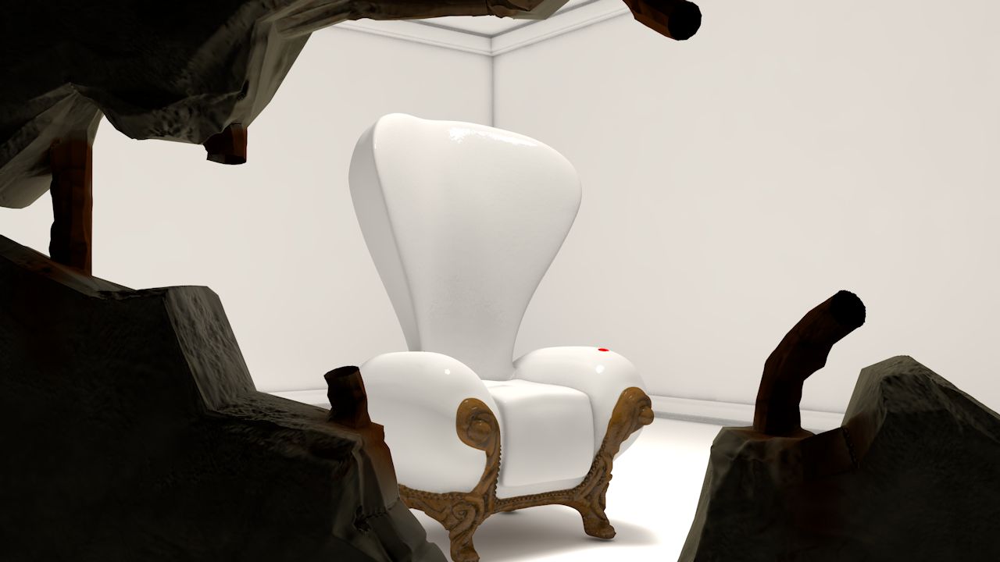 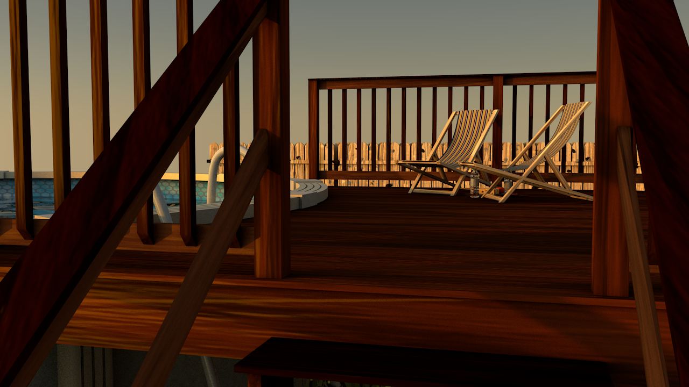 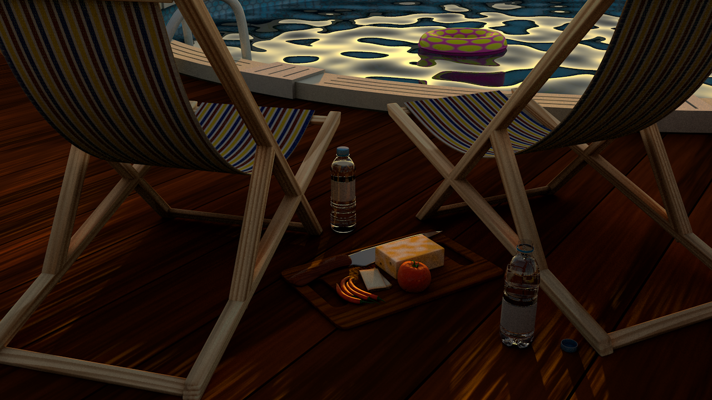 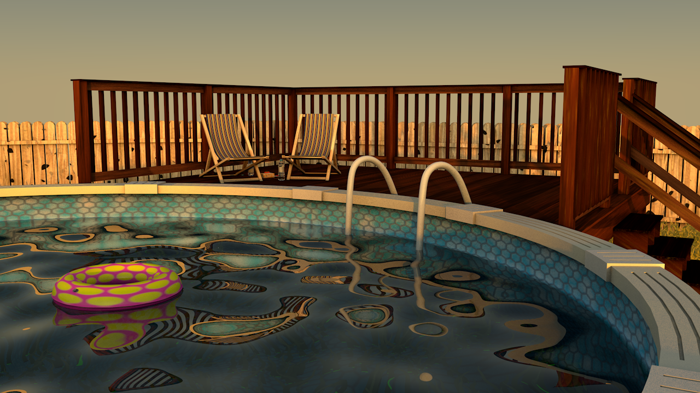 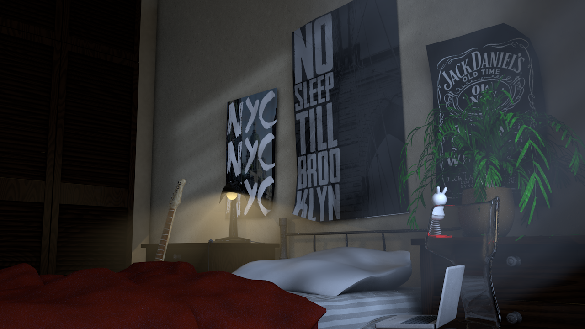 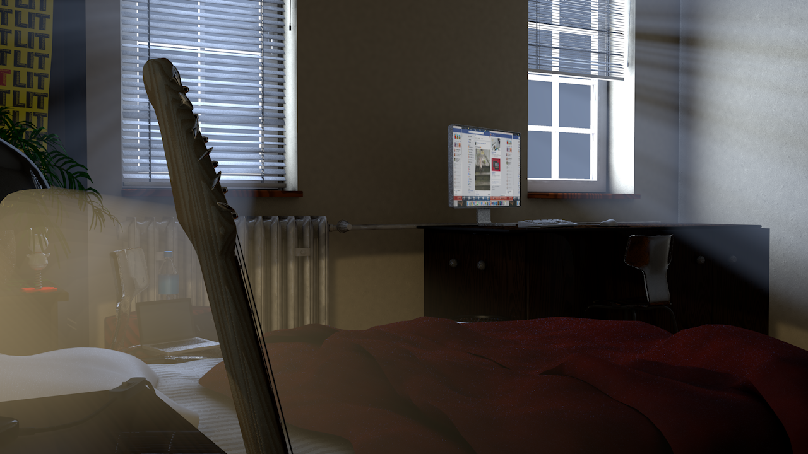 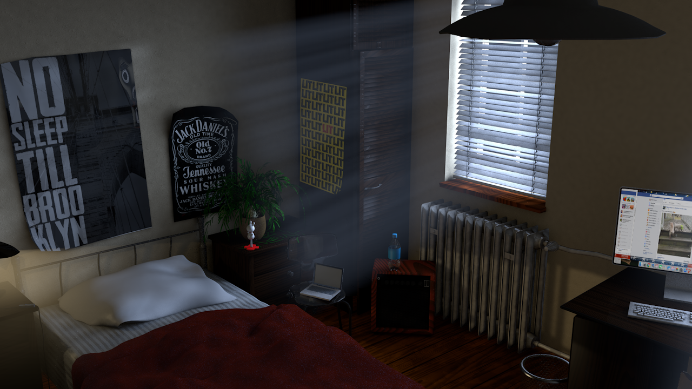